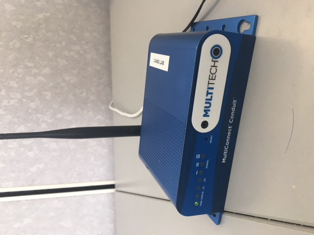
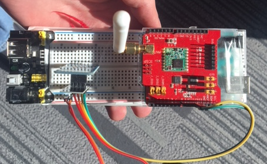

Technologies
Technologies
Mobile Crowdsensing Framework over Low-power Wide Area Networks
We need many technologies to solve our problem such as:
- Programming Language for the Back End Proxy Server:
- Android Language for the Front End Library:
- LoRa Gateway:
- LoRa Node:
- Actual Android Devices:
As part of the project back-end requirements we need to implement an application that runs on the LoRa Gateway router. This application will receive the small fragments of messages sent to it from the LoRa Node, decode and recombine them, then forward the complete HTTP message to the back-end website. We have chose python as a back-end programming language to write this application which can perform these tasks. Python is a high-level scripting language which has an enormous number of built-in libraries; especially the libraries that are related to transmitting data over a network. Python is one of the most human-readable programming languages available which support the creation of a well-documented codebase for our client.
The project basic goal is the enabling of mobile crowdsensing over a LoRaWAN connection so it is necessary to have an application that runs on these end-devices. for this application we have chosen kotlin as the main Android programming language. Kotlin is a secondary language for Android development that is also included as native to Android Studio. It has many of the same advantages as Java and has some nice quality of life features with a greater focus on mobile development.
We need a media access control that is designed to send messages between end devices and the central network server. As in figure 1, the LoRa Gateway will be connected to the server by standard IP connection and act as a transparent bridge which does convert RF packets to IP packets and vice-versa.
Figure 1: LoRa Gateway
LoRa Node is essintial to recieve the message from an android device and other mobile crowdsensing projects (see Figure.2) to the LoRa Gateway over LoRaWAN network.
Figure 2: LoRa Node
We need to test our source code with an actual device that it is connected to LORAWAN. An actual Android device saves developers a huge amount of time in testing because emulators do not work properly with networking features and might slow the performance of the computer.